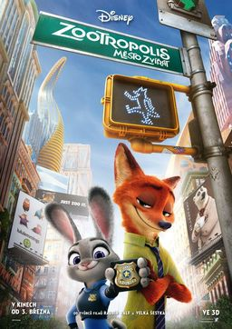

| Постер | Описание |
|---|---|
|  |
Мультфильм повествует о Зверополисе — современном городе, населённом антропоморфными животными. Как и любой мегаполис, Зверополис разделён на районы, каждый из которых полностью повторяет естественную среду обитания его жителей. Животные в мире Зверополиса когда-то были дикими, но ко времени, когда происходит действие фильма, люди так и не появились, а диких животных уже не существует, все животные — цивилизованные. Иными словами, вместо людей появились цивилизованные животные. |